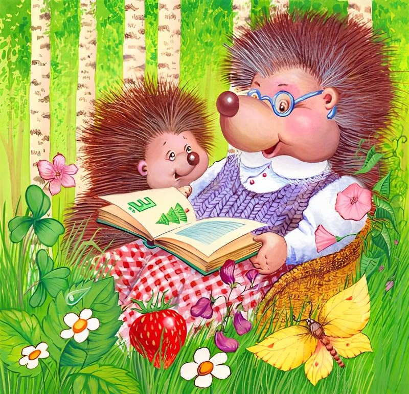

Как ежик Буль боялся идти в школу
Ольга Авдеева
Маленький Буль с раннего детства мечтал о школе. Многие его друзья были старше ежика, поэтому ему часто приходилось скучать одному, ожидая их с занятий. В такие моменты он сильно хотел быстрее вырасти и тоже пойти учиться. Школа ему представлялась увлекательным приключением, тем более, что друзья часто рассказывали веселые истории, что случались с ними во время занятий. Ежик Буль очень любил слушать эти смешные рассказы про школу, и с нетерпением ждал дня, когда он возьмет в руки портфель и познакомится со своей первой учительницей.
И такой день не заставил себя долго ждать. Однажды мама ежика сказала, что завтра он пойдет в школу. Буль был на седьмом небе от счастья. Следующим утром он взял большой букет для учительницы и поспешил в школу. Все для него там было новым и необычным, но Буль совсем не боялся, он замер в предвкушении интересных приключений и веселых историй. Но зайдя в класс, он увидел совершенно незнакомых ему ребят, которые спокойно сидели за партами. Это его немножко смутило, но все же Ежик ждал, что зайдет учительница и начнется веселье.
Каково же было его удивление, когда учительница вместо смешных рассказов принялась объяснять им, что в школе нужно вести себя тихо и спокойно. Дети должны внимательно слушать ее задания, читать, писать и рисовать, а бегать и кричать им запрещается. Это не понравилось Булю, а когда они принялись списывать с доски задание, то он и вовсе растерялся. У маленького ежика плохо получалось, и он очень боялся, что учительница будет его ругать. Кроме того, Буль не до конца понял задание, а спросить у кого-то стеснялся.
После уроков ежик возвращался домой расстроенным и напуганным. Школа оказалась совсем не такой, как представлялось. За ужином он практически не разговаривал и очень рано пошел спать. Целую ночь его мучили кошмары. Ему снилось, что мама забыла забрать его со школы, что в шкафчике для одежды прячется монстр и что он забыл выучить домашнее задание.
Утром Буль проснулся в слезах.
– Я не хочу идти в школу! Я еще совсем маленький. – плакал ежик, удивляя маму. Ей было совсем непонятно, почему так быстро изменилось отношение малыша, который еще вчера радостно бежал на занятия.
– Почему, Буль? Разве тебе не интересно получать новые знание и знакомиться с новыми друзьями?
– Нет, там совершенно не интересно, а страшно. Не отпускай меня в школу, пожалуйста, я хочу оставаться дома, играть и читать веселые рассказы про школу для детей. – на этих словах ежик запнулся. Ведь действительно, такие истории были его любимыми. Он так мечтал о школе, а теперь ее боится. От этого несоответствия ему стало очень горько. Малыш воткнулся носом в подушку и зарыдал.
Но умная мама все поняла и без слов: ее ежик боялся не школы, а нового образа жизни.
– Малыш, не нужно плакать. Боятся нового и неизвестного вполне естественно. Даже взрослые чувствуют неловко, попадая в непривычные условия.
Услышав, это Буль немного успокоился:
– Так меня не будут ругать за то, что у меня не все получается?
– Конечно нет. Ошибаться может каждый. Для этого ты и пошел в школу – чтобы учиться. Не бойся спрашивать обо всем, что тебе не понятно, и у тебя обязательно все получится!
– А если я принесу плохую отметку, ты не перестанешь меня любить?
– Ну что за глупости! Ведь мы с папой любим тебя не за какие-то заслуги, а просто за то, что ты наш малыш. К тому же, кто-то лучше знает математику, а кому-то хорошо получается писать сочинения. Главное в школе не отметки, а новые знания!
Буль уже обрадовался и снова захотел идти в школу, но на всякий случай решил уточнить еще один вопрос:
– А бегать и играть совсем-совсем нельзя, да?
Мама улыбнулась:
– Можно, но только на переменах. А на занятиях нужно внимательно слушать учительницу, чтобы не пропустить ничего интересного. Ведь ты же хочешь узнать, почему меняются времена года?
– Хочу-Хочу!
Сегодня ежик бежал в школу еще быстрее, чем вчера. Он уже не боялся и понимал, насколько важно откровенно говорить с родителями о своих переживаниях. А еще его ожидала веселая и смешная история, причем даже не одна. А вы любите ходить в школу?